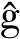
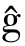
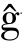
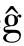

孙用先生：
久疏问候了。上海文坛寂寥，书坊势利，杭州消息不灵，想不深知，但说起来太烦，恕不多谈了。《勇敢的约翰》至今为止，颇碰了几个钉子[36]。自然，倘一任书坊用粗纸印刷，那是有出版之处的，但我不答应如此。
书坊专为牟利，是不好的，这能使中国没有好书。我现已筹定款项，决于本月由个人付印一千部。那十二张壁画，[37]不得已只好用单色铜版（因经济关系），书中空白之处，仍想将世界语本中之三个插画[38]印上，所以仍请即行寄下，以备制图为荷。
这回搬了几次，对不起得很，将 先生所寄的那一张对于壁画上的诗的指数[39]失掉了。请再写给我一次，恐无底稿，故将每节之第一句录上：
No. 1.ar sur la herbejoafgardisto nia……
“Perla korjuvero，Ilnjo，mia ĉio！”……
2.“Laste mi vin vidas，ho printemp’de koro，……
“Do nun，Ilnjo bela，trezor’de l’animo，……
3.Nokt’，rabband’，pistoloj hakaj，pikaj feroj，……
“Donu Di’vesperon de feliĉo plenan”……
4.Jen，husaroj venis，husartrupo bela，……
Multon per la lango diris la junulo，……
5.De l’ĉeval’li saltis，al knabin’li iris，……
“Ho savint’！Pri l’nom’ne estu vort’deman-da，……
6.Kaj la re

o turnis sin al li jenvorte：……Nun la re

' malfermis sian trezorejon，……7.Skuis，turnis sin la birdo en aero，……
Kiom landojn flugis ili，scias Dio，……
8.“Do，se vi alvenis，bone，man

u kun ni！……Re

’ datono rompis funtojn ĉirkaǔ kvin nun……9.Maljunulinaĉoj svarme venis，iris，……
Balailoj estis en amas’sur tero，……
10.Iris la gigant’kun vado senripoza，……
“Kaj insulo kia”——sonis la demando，……
11.Helpu Di’！Jen terurega gardo……
En la brust’de l’drako koron elesploris……
12.Tiu akvo estis mem la Vivoputo，……
Inter fea gent’，en rondo idilia，……
迅 上 二十年五月四日
信件请寄宝山路商务印书馆编辑所周乔峰转周豫才收
注 释
[36] 颇碰了几个钉子 指孙用译的《勇敢的约翰》原计划在《奔流》连载，但《奔流》突然停刊；旋由鲁迅先后介绍给《小说月报》、《学生杂志》、春潮书店，均未能发表。参看《集外集拾遗补编·〈勇敢的约翰〉校后记》。
[37] 十二张壁画 参看301123信注〔1〕。
[38] 世界语本中之三个插画 参看291108②信注〔2〕。按《勇敢的约翰》中文译本出版时，鲁迅只选印了其中的两幅。
[39] 诗的指数 指原诗第×首第×行。